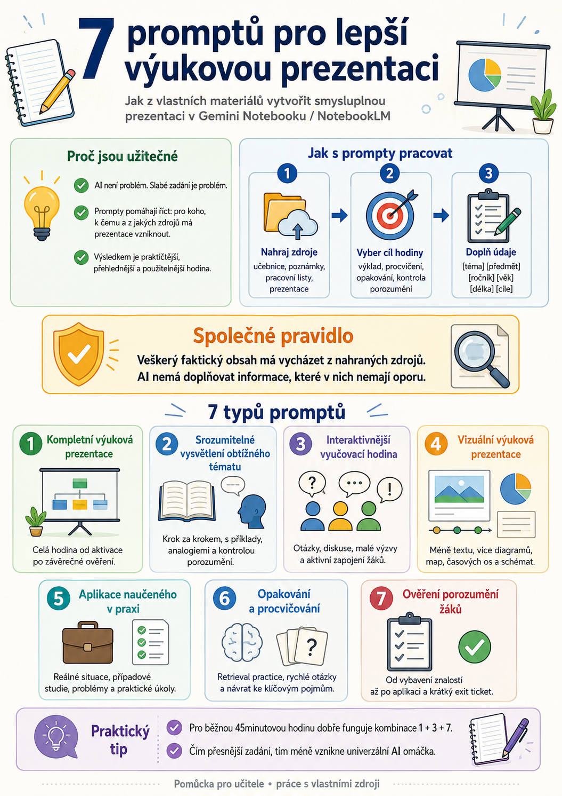

Jak z vlastních materiálů vytvořit smysluplnou prezentaci v Gemini Notebooku / NotebookLM.
7 promptůGemini NotebookVýuková prezentaceVlastní zdroje
01
Nahraj zdrojeUčebnice, poznámky, pracovní listy nebo prezentace
02
Vyber cíl hodinyVýklad, procvičování, opakování nebo kontrola porozumění
03
Doplň údajeTéma, předmět, ročník, věk, délku a vzdělávací cíle
08 Praktické návody pro AI ve výuce
7 promptů, které z vašich materiálů vytvoří lepší výukovou prezentaci
Sedm různých způsobů, jak v Gemini Notebooku proměnit jednu sadu zdrojů v promyšlený výklad, aktivní hodinu, procvičování i ověření porozumění.
28. srpna 2026Gemini Notebook7 promptů
AI dokáže během několika minut vytvořit prezentaci. To samo o sobě ale ještě neznamená, že vznikne dobrá výuková prezentace.
Rozdíl často není v použitém modelu, ale v zadání.
Místo jednoduchého:
„Vytvoř prezentaci o Evropské unii.“
můžeme AI říct, pro koho prezentace je, jak má být hodina vystavěná, co mají žáci dělat, jak má AI ověřovat jejich porozumění a hlavně z jakých zdrojů smí čerpat.
Následujících sedm promptů je určeno právě pro práci s vlastními výukovými materiály. Výborně se proto hodí například do Gemini Notebooku (NotebookLM), kam můžeme nahrát učebnici, vlastní poznámky, pracovní listy, prezentace, odborné texty nebo další podklady.

Pomůcka pro učitele: od nahrání zdrojů přes volbu cíle až po sedm typů výukových prezentací.
Proč jsou tyto prompty užitečné
AI není problém. Slabé zadání je problém.
Prompty pomáhají říct: pro koho, k čemu a z jakých zdrojů má prezentace vzniknout.
Výsledkem je praktičtější, přehlednější a použitelnější hodina.
Jak s prompty pracovat
Nejprve do Gemini Notebooku nahrajte zdroje, ze kterých má AI vycházet. Potom si podle cíle hodiny vyberte jeden z následujících promptů.
Text v hranatých závorkách nahraďte vlastními údaji:
[téma] – například Evropská unie
[předmět] – například Občanská nauka
[ročník / úroveň vzdělávání] – například 2. ročník střední školy
[věk] – například 16–17 let
[délka] – například 45 minut
[cíle] – například „žák vysvětlí hlavní instituce EU a rozliší jejich základní funkce“
Nemusíte přitom vyplňovat úplně všechno. Čím přesnější informace ale AI dostane, tím méně bude výsledná prezentace připomínat univerzální internetovou omáčku.
Společné pravidlo: Veškerý faktický obsah má vycházet z nahraných zdrojů a AI nemá doplňovat informace, které v nich nemají oporu.
To je při tvorbě školních materiálů velmi rozumná pojistka.
1. Vytvoření kompletní výukové prezentace
Kdy prompt použít
Tohle je nejlepší univerzální varianta. Hodí se, pokud chcete vytvořit celou vyučovací hodinu od úvodu až po závěrečné ověření učení.
Prompt
Na základě nahraných zdrojů vytvoř kompletní výukovou prezentaci na téma [téma] v předmětu [předmět] pro [ročník / úroveň vzdělávání], určenou žákům ve věku [věk], pro vyučovací hodinu v délce [délka].
Přizpůsob prezentaci těmto vzdělávacím cílům: [cíle].
Začni aktivací předchozích znalostí žáků. Poté představ a srozumitelně vysvětli hlavní pojmy pomocí vhodných příkladů, vizuálních prvků a propojení s reálným světem tam, kde je to vhodné.
Zařaď činnosti žáků, otázky podporující přemýšlení, průběžné ověřování porozumění a příležitosti k použití získaných znalostí.
Pokud je to relevantní, upozorni na časté omyly nebo nesprávné představy žáků.
Na závěr zařaď stručné shrnutí a závěrečné ověření učení.
Přizpůsob jazyk, příklady, aktivity a úroveň obtížnosti daným žákům.
Každý snímek zaměř pouze na jednu hlavní myšlenku. Udržuj prezentaci vizuálně přehlednou, stručnou a logicky návaznou.
Veškerý faktický obsah založ pouze na nahraných zdrojích. Nepřidávej informace, které nemají v poskytnutých zdrojích oporu.
2. Srozumitelné vysvětlení obtížného tématu
Kdy prompt použít
Některá témata prostě potřebují rozebrat na menší kusy. Hodí se například pro fyziku, elektrotechniku, ekonomiku, gramatiku nebo složitější společenskovědní pojmy.
Prompt
Na základě nahraných zdrojů vytvoř výukovou prezentaci, která srozumitelně vysvětlí [obtížné téma nebo pojem] v předmětu [předmět] pro [ročník / úroveň vzdělávání], určenou žákům ve věku [věk].
Rozděl téma do jednoduchých a logicky navazujících kroků. Postupuj od základních myšlenek ke složitějším konceptům.
Používej jasná vysvětlení, relevantní příklady, analogie, přirovnání, srovnání a vizuální prvky tam, kde skutečně pomohou porozumění.
Vysvětli důležité pojmy ještě před jejich používáním a propojuj nové informace s tím, co již žáci pravděpodobně znají.
Upozorni na časté omyly, nesprávné představy a problematická místa.
V průběhu prezentace zařazuj krátké otázky nebo aktivity ověřující porozumění.
Přizpůsob jazyk, příklady a složitost věku a úrovni žáků.
Každý snímek udržuj obsahově zaměřený, vizuálně přehledný a stručný.
Veškerý faktický obsah založ pouze na nahraných zdrojích. Nepřidávej informace, které nemají v poskytnutých zdrojích oporu.
3. Interaktivnější vyučovací hodina
Kdy prompt použít
Když nechcete, aby učitel 40 minut mluvil a žáci 40 minut statečně předstírali, že poslouchají.
Tento prompt staví prezentaci kolem činnosti žáků.
Prompt
Na základě nahraných zdrojů vytvoř interaktivní výukovou prezentaci na téma [téma] v předmětu [předmět] pro [ročník / úroveň vzdělávání], určenou žákům ve věku [věk].
Vytvoř prezentaci tak, aby se žáci během hodiny aktivně zapojovali a nebyli pouze pasivními příjemci informací.
Zařaď zajímavé otázky, předvídání výsledků, krátké diskuse, problémové úlohy, malé výzvy, otázky k zamyšlení a podle vhodnosti také individuální práci, práci ve dvojicích nebo ve skupinách.
Aktivity rozmísti strategicky během celé hodiny tak, aby:
aktivovaly předchozí znalosti,
prohlubovaly porozumění,
vedly k použití získaných znalostí,
průběžně ověřovaly učení.
Přizpůsob aktivity, jazyk a náročnost žákům a danému předmětu.
Každý snímek udržuj stručný, přehledný a vizuálně jasný. U každé aktivity uveď jednoznačné instrukce pro žáky.
Veškerý faktický obsah založ pouze na nahraných zdrojích. Nepřidávej informace, které nemají v poskytnutých zdrojích oporu.
4. Vizuální výuková prezentace
Kdy prompt použít
Tento prompt je vhodný všude tam, kde lze učivo spíše ukázat než dlouze popisovat.
Dobře funguje například u procesů, historických událostí, technických zařízení, geografických témat nebo vztahů mezi jednotlivými pojmy.
Prompt
Na základě nahraných zdrojů vytvoř vizuálně poutavou výukovou prezentaci na téma [téma] v předmětu [předmět] pro [ročník / úroveň vzdělávání], určenou žákům ve věku [věk].
Hlavní myšlenky prezentuj pomocí nejvhodnějších vizuálních forem, například diagramů, ilustrací, grafů, časových os, map, modelů, znázornění procesů nebo popsaných příkladů.
Vizuální prvky používej k vysvětlování pojmů, zobrazování vztahů a usnadnění pochopení složitých informací – nikoli pouze jako dekoraci.
Zvýrazni základní pojmy a nejdůležitější informace, ale množství textu přímo na snímcích udržuj co nejmenší.
Přizpůsob vizuální styl, obsah a úroveň složitosti věku žáků a danému předmětu.
Každý snímek udržuj přehledný, nepřeplněný a snadno čitelný.
Veškerý faktický obsah založ pouze na nahraných zdrojích. Nepřidávej informace, které nemají v poskytnutých zdrojích oporu.
5. Pomoz žákům použít to, co se naučili
Kdy prompt použít
Výborný prompt pro okamžik, kdy nechceme skončit u definice a pouhého zapamatování. AI má vytvořit situace, ve kterých musí žák znalost skutečně použít.
Prompt
Na základě nahraných zdrojů vytvoř výukovou prezentaci, která pomůže žákům použít znalosti získané o tématu [téma] v předmětu [předmět] pro [ročník / úroveň vzdělávání], určenou žákům ve věku [věk].
Zařaď smysluplné úlohy odpovídající předmětu, například:
situace z reálného života,
problémy k řešení,
případové studie,
experimenty,
analýzu zdrojů,
praktické úkoly nebo výzvy.
Postupuj od úloh řešených s podporou učitele k samostatnější aplikaci znalostí.
Veď žáky k vysvětlování jejich postupu, zdůvodňování rozhodnutí a používání znalostí v nových situacích.
Průběžně zařazuj krátké otázky a místa pro zpětnou vazbu, pomocí kterých lze ověřit porozumění.
Přizpůsob úkoly, jazyk a náročnost věku a úrovni žáků.
Každý snímek udržuj obsahově zaměřený, vizuálně přehledný a stručný.
Veškerý faktický obsah založ pouze na nahraných zdrojích. Nepřidávej informace, které nemají v poskytnutých zdrojích oporu.
6. Prezentace pro opakování a procvičování
Kdy prompt použít
Ideální před testem, po dokončení tematického celku nebo na začátku další hodiny.
Důležitou součástí promptu je retrieval practice – vybavování informací z paměti ještě před zobrazením správné odpovědi.
Prompt
Na základě nahraných zdrojů vytvoř prezentaci pro opakování a procvičování tématu nebo tematického celku [téma / celek] v předmětu [předmět] pro [ročník / úroveň vzdělávání], určenou žákům ve věku [věk].
Zaměř se na nejdůležitější pojmy, klíčové termíny, fakta, pravidla, vzorce nebo dovednosti, které si žáci potřebují zapamatovat.
Zařaď otázky založené na vybavování informací z paměti, rychlé výzvy, procvičovací úlohy a kontroly častých chybných představ.
Nejdříve nech žáky odpověď vybavit nebo formulovat a až následně zobraz vysvětlení nebo správnou odpověď.
Opakovaně se vracej k důležitým vztahům mezi jednotlivými myšlenkami a zařaď také možnosti použít již získané znalosti v nových situacích.
Přizpůsob jazyk, aktivity a úroveň obtížnosti žákům.
Každý snímek udržuj obsahově zaměřený, vizuálně přehledný a stručný.
Veškerý faktický obsah založ pouze na nahraných zdrojích. Nepřidávej informace, které nemají v poskytnutých zdrojích oporu.
7. Ověření porozumění žáků
Kdy prompt použít
Tady nejde primárně o výklad. Cílem je zjistit, co žáci skutečně pochopili.
Velmi užitečné například po dokončení tématu nebo jako diagnostická část hodiny.
Prompt
Na základě nahraných zdrojů vytvoř výukovou prezentaci zaměřenou na ověření porozumění tématu [téma] v předmětu [předmět] pro [ročník / úroveň vzdělávání], určenou žákům ve věku [věk].
Zařaď různé typy otázek a krátkých úkolů, které postupují:
vybavení znalostí → porozumění → aplikace → náročnější přemýšlení, pokud je pro dané téma vhodné.
Používej rychlé kontroly znalostí, otázky odhalující časté nesprávné představy, reflexní otázky a úkoly, při kterých musí žáci vysvětlit své uvažování.
Správné odpovědi nebo zpětnou vazbu zobraz až poté, co měli žáci dostatek času sami odpovědět.
Na závěr vytvoř krátký exit ticket, pomocí kterého lze zjistit, zda byly splněny hlavní vzdělávací cíle hodiny.
Přizpůsob jazyk, typy otázek a obtížnost žákům.
Každý snímek udržuj obsahově zaměřený, vizuálně přehledný a stručný.
Veškerý faktický obsah založ pouze na nahraných zdrojích. Nepřidávej informace, které nemají v poskytnutých zdrojích oporu.
Jeden zdroj, sedm různých hodin
Na celé sadě je zajímavé právě to, že nemusíme měnit zdroje.
Do jednoho notebooku můžeme nahrát například kapitolu učebnice a ze stejného materiálu vytvořit:
výklad,
zjednodušené vysvětlení,
interaktivní hodinu,
vizuální prezentaci,
aplikaci,
opakování,
ověření znalostí.
A to je podle mě mnohem zajímavější způsob využití AI než neustálé generování dalších a dalších materiálů od nuly.
AI zde není zdrojem učiva. Zdrojem zůstávají naše materiály. AI mění způsob, jakým s nimi pracujeme.
Malý trik: prompty můžete kombinovat
Jednotlivé prompty není nutné používat izolovaně.
Například můžete zadat:
„Vytvoř kompletní výukovou prezentaci podle promptu č. 1, ale při návrhu jednotlivých snímků dodržuj také zásady vizuální prezentace z promptu č. 4 a zařaď průběžné ověřování porozumění podle promptu č. 7.“
Tím vzniká mnohem přesnější zadání.
Pro běžnou 45minutovou vyučovací hodinu je podle mě velmi dobrá kombinace:
1 + 3 + 7
výklad + aktivní zapojení žáků + průběžné ověřování porozumění
To už je podstatně blíž skutečné přípravě hodiny než povel „udělej mi PowerPoint“.
Univerzální verze pro učitele
Pokud nechcete pokaždé vybírat mezi sedmi prompty, můžete použít také následující kombinovanou šablonu:
Na základě nahraných zdrojů vytvoř výukovou prezentaci na téma [téma] v předmětu [předmět] pro [ročník], určenou žákům ve věku [věk], pro [délka] minutovou vyučovací hodinu.
Vzdělávací cíle jsou: [cíle].
Hodinu strukturuješ takto:
1. Aktivace předchozích znalostí
krátká otázka, problém, obrázek nebo situace.
2. Vysvětlení nového učiva
postupuj od jednoduchého ke složitějšímu, vysvětli důležité pojmy a používej příklady.
3. Aktivní práce žáků
pravidelně zařazuj otázky, krátké úkoly, diskusi, práci ve dvojicích nebo jinou vhodnou aktivitu.
4. Aplikace učiva
vytvoř alespoň jednu úlohu, při které žáci použijí novou znalost v praktické nebo nové situaci.
5. Ověření porozumění
průběžně používej krátké kontroly znalostí a otázky odhalující případné chybné představy.
6. Závěr
stručně shrň nejdůležitější poznatky a zakonči hodinu krátkým exit ticketem.
Udržuj snímky stručné a vizuálně přehledné. Jeden snímek má obsahovat jednu hlavní myšlenku.
Vizuální prvky používej především tehdy, pokud pomáhají něco vysvětlit, porovnat nebo pochopit.
Přizpůsob jazyk, příklady, aktivity a obtížnost věku a úrovni žáků.
Veškerý faktický obsah založ pouze na nahraných zdrojích. Pokud některou informaci nelze z nahraných zdrojů doložit, nepoužívej ji a nevymýšlej ji.
Proč si tyto prompty schovat
Protože jeden dobře napsaný prompt může učiteli ušetřit víc času než deset efektních AI aplikací.
A hlavně: těchto sedm promptů neříká AI pouze „co má vytvořit“. Říká jí také „jak má o výuce přemýšlet“.
A právě tam začíná být AI pro učitele opravdu zajímavá.
Další návody
Navazující články pro práci se zdroji, prompty, vizuálními materiály a kontrolou výstupu AI.